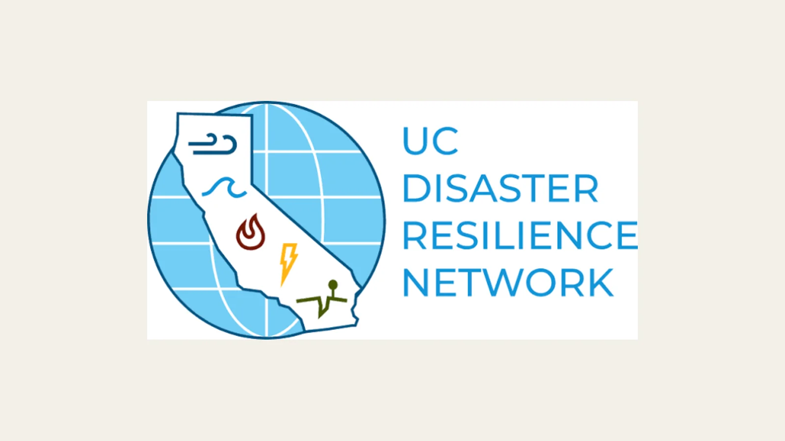

Translating Earthquake Research With the UC Disaster Resilience Network
A conversation about earthquake modeling developed into an IRISTEM curriculum project based on university research.

A relationship built through research questions
On December 18, 2025, IRISTEM contacted Professor David Oglesby of UC Riverside while researching earthquake rupture dynamics, ground motion, and hazard assessment. Professor Oglesby serves as Chair of the Executive Committee and Co-Chair of the Education Task Force for the UC Disaster Resilience Network.
Professor Oglesby responded on January 4, 2026, offering to discuss fault modeling and IRISTEM’s research questions. The students met with him on January 23 and continued discussing how earthquake science could become more understandable and useful for younger learners. That January conversation began the broader working relationship.
Beginning the translation project
On March 25, Professor Oglesby supplied research papers and supporting materials for the students to examine and translate. IRISTEM confirmed on March 26 that it would begin the translation process and later completed a student-facing curriculum adaptation. March 25 is the project date for this post because it marks the start of that specific exchange of research for educational development.
IRISTEM’s work included identifying the ideas students would need in sequence, explaining technical terms without removing their meaning, and designing a curriculum path that connects earthquake processes with the decisions communities make about safety. Professor Oglesby provided the scientific source material and context in his UC Disaster Resilience Network leadership and education role.
Teaching models without flattening the science
The resulting resource introduces students to earthquake ruptures, ground motion, fault models, hazard assessment, and community safety. It distinguishes the physical process along a fault from the shaking people may experience and helps learners consider why scientists use models to investigate events that cannot be recreated at full scale.
The curriculum does not treat a model as a perfect prediction. Students are asked to consider assumptions, evidence, and how changes in a fault scenario could affect hazards. That approach makes the material accessible without suggesting that earthquake behavior is simple or certain.
This was work with Professor Oglesby through his network leadership and education role. It does not imply that every University of California campus participated in or formally endorsed the curriculum. Accurately defining the relationship keeps attention on the real collaboration: university research and guidance, translated by IRISTEM into a resource younger students can investigate.